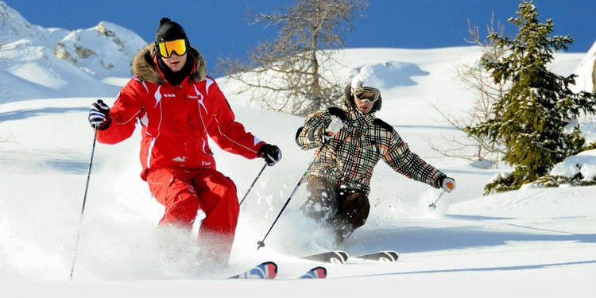

This and last year I played JV baseball. Although it was JV I had a really great time during the season, socializing with people,competing, traveling during varsity NCS. I realized only after the season ended how much I love baseball.
This year during the Febuary break I went up to Park City, Utah with my friends. The whole trip was amazing. The car ride, the food, the skiing, etc. Me and my friends shared some good memories.